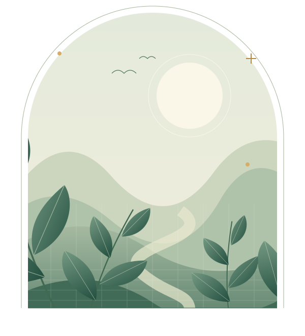

AI与大数据驱动
融合可穿戴设备与人工智能，实现精准康复评估、训练指导与运动风险预警。

08专业服务板块
05人群与服务场景
全周期从评估到日常关爱
每一种生活，都值得被好好照顾。核心优势 · 关于我们
从评估到干预，从机构到居家，用可信的技术手段让康复服务真正走进每一个人。
融合可穿戴设备与人工智能，实现精准康复评估、训练指导与运动风险预警。
运用区块链技术保障数据安全，打通跨机构健康数据共享通道，让康复记录一路随行。
涵盖军警、校园、社区、居家等服务场景，提供从运动损伤到老年慢病的端到端服务。
核心服务
八大专业服务，从草木疗愈到智慧评估，照顾不同阶段的你。
适用人群与客户
从特种职业到校园师生，从社区老人到机构客户，让专业康复触手可及。
高强度职业损伤防护与驻点康复支持
运动损伤评估与体能恢复训练指导
校园运动防护体系与急救康复科普
居家康复指导与慢性病全程管理
养老机构与企事业单位的健康服务对接
预约体验 DEMO
这是流程体验，您的信息未发送给任何机构。
正式服务渠道开放后，将支持实际预约。